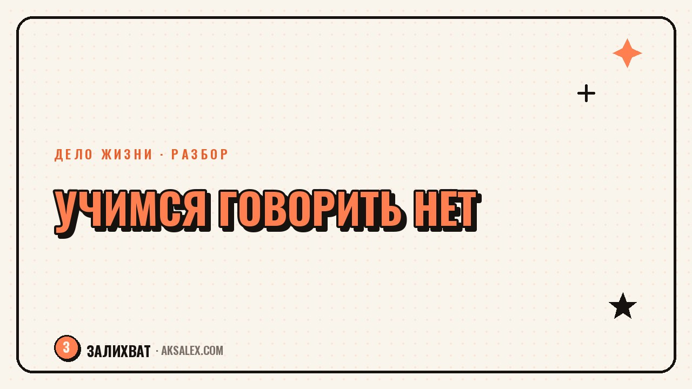

Как научиться говорить нет и не бояться недовольства

Коллега просит подменить на выходных, хотя у тебя уже есть планы. Подруга в третий раз зовёт на мероприятие, куда совсем не хочется. Родственник просит одолжить деньги, которые сейчас нужны самому. В такие моменты многие соглашаются вместо отказа - не потому что действительно хотят, а потому что боятся чужой реакции. Разберём, почему так происходит и что реально помогает научиться говорить нет без разрушительного чувства вины.
Почему слово нет даётся так трудно
Страх отказывать редко связан с самим словом - дело в том, что стоит за ним в голове. Это может быть страх показаться эгоистом, боязнь испортить отношения или привычка измерять собственную ценность тем, насколько ты полезен другим. Если в детстве хвалили в основном за уступчивость и послушание, во взрослой жизни отказ начинает ощущаться как что-то почти неприличное.
Ещё одна причина - желание избежать неловкого момента прямо сейчас, даже в ущерб себе в будущем. Сказать да проще и быстрее: не нужно объяснять причину, терпеть паузу в разговоре, видеть недовольное лицо. Но эта лёгкость обманчива - согласие, которое не совпадает с твоими реальными желаниями, накапливается в усталость и раздражение.
Как распознать, что пора отказывать
Хороший сигнал - внутреннее сопротивление ещё до того, как ты успел ответить. Если на просьбу тело реагирует напряжением, а в голове сразу всплывают оправдания, почему нельзя отказать, скорее всего это и есть момент, когда границу стоит обозначить.
Что на самом деле происходит, когда ты не умеешь отказывать
Постоянное да в ущерб себе не делает отношения крепче - оно делает их неравными. Человек, который привык получать от тебя согласие, начинает воспринимать его как само собой разумеющееся, а твоё недовольство растёт изнутри, оставаясь невидимым снаружи.
- Накопленная усталость от чужих задач вместо своих собственных приоритетов
- Скрытая обида на людей, которые на самом деле просто попросили, а не заставили
- Ощущение, что время и энергия утекают на то, что не имеет значения для тебя
- Снижение доверия к себе - ощущение, что твои желания не считаются важными
Парадокс в том, что именно отказ в нужный момент укрепляет уважение, а не разрушает его. Люди, которые ценят тебя, нормально воспринимают границы - а те, кто обижается на любой отказ, часто были готовы пользоваться твоей уступчивостью без остатка.
Как сказать нет на практике
Отказ не обязан быть резким или оправдывающимся на десять предложений. Чем короче и спокойнее формулировка, тем меньше повода для спора или чувства вины. Длинные объяснения часто выдают неуверенность и провоцируют собеседника продолжать уговаривать.
Рабочие формулировки
- Спасибо, что подумал обо мне, но в этот раз не смогу
- Сейчас это не входит в мои планы, предложу в другой раз
- Мне нужно подумать, отвечу позже - вместо автоматического да
- Понимаю, что это важно, но у меня другие обязательства на это время
- Я ценю доверие, но сейчас это не то, во что я готов включаться
Отказ - это не про человека, которому ты отказываешь, а про твои реальные возможности и желания в конкретный момент. Это две разные вещи, и путать их не стоит.
Как справиться с реакцией на отказ
Иногда человек расстраивается или настаивает - и в этот момент легко сдаться, лишь бы закрыть неприятный разговор. Здесь помогает заранее признать: ты не обязан контролировать чужие эмоции, а твоя задача - честно сообщить о своём решении, а не сделать всем приятно одновременно.
Если собеседник продолжает настаивать после первого отказа, работает повтор одной и той же фразы без новых аргументов - так называемая техника заезженной пластинки. Она не требует придумывать всё более убедительные причины и не оставляет пространства для долгого спора.
Если отказывать близким людям особенно тяжело
С близкими людьми отказ часто даётся труднее, потому что страшно испортить отношения. Но честный разговор о своих границах обычно сближает, а не разрушает - в отличие от накопленной тихой обиды, которая в итоге вырывается наружу в худший момент.
С чего начать, если отказывать непривычно
Как и любой навык, умение говорить нет тренируется постепенно, а не осваивается за один разговор. Резко начать отказывать во всём подряд - верный способ разочароваться и бросить попытки на первой неудаче.
Начни с низких ставок: откажи в мелкой просьбе от человека, с которым отношения точно не пострадают от одного нет. Понаблюдай за своей реакцией и реакцией собеседника - скорее всего, ничего катастрофического не случится. Это и есть основа для следующего, более важного отказа.
| Ситуация | Что мешает | Что помогает |
|---|---|---|
| Просьба коллеги подменить | Страх показаться плохим в команде | Короткое нет без подробных извинений |
| Навязчивое приглашение | Боязнь обидеть близкого человека | Честная фраза про нежелание, без лишних причин |
| Просьба одолжить деньги | Страх разрушить отношения | Чёткий отказ без оправданий за свои финансы |
| Давление после первого нет | Желание закончить спор любой ценой | Повтор одной фразы без новых аргументов |
Частые вопросы
Как сказать нет, если я боюсь обидеть человека?
Отказ и обида - не одно и то же: ты отвечаешь за свои слова и тон, а не за то, как человек решит это воспринять. Спокойная и короткая формулировка снижает риск конфликта лучше, чем долгие оправдания.
Что делать, если после отказа человек обиделся надолго?
Это говорит больше о его реакции на границы, чем о том, что отказ был неправильным. Если отношения держатся только на твоём постоянном согласии, стоит честно оценить, насколько они равноправны.
Нужно ли объяснять причину отказа?
Необязательно - короткого нет без детальных объяснений вполне достаточно. Причину стоит называть, только если ты сам хочешь это сделать, а не потому что чувствуешь, что обязан оправдаться.
Почему легче отказывать незнакомым людям, чем близким?
С незнакомыми меньше страха потерять отношения, поэтому отказ ощущается безопаснее. С близкими работает та же логика, просто тревога сильнее - и именно поэтому тренировать навык стоит сначала на менее значимых ситуациях.
Как понять, что я слишком часто говорю нет?
Если отказы становятся способом избегать любой ответственности или сближения, а не реальным выражением границ, это повод присмотреться к себе внимательнее. Здоровое нет связано с конкретной ситуацией, а не с автоматической защитной реакцией на всё подряд.
Раз тема оказалась полезной, вот что почитать следующим. Почему отдых вызывает чувство вины и как перестать себя за это ругать.
Читать статью →а не вручную